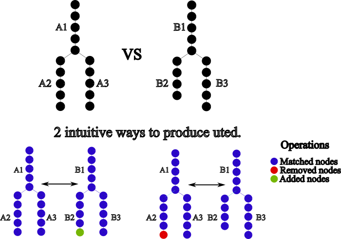
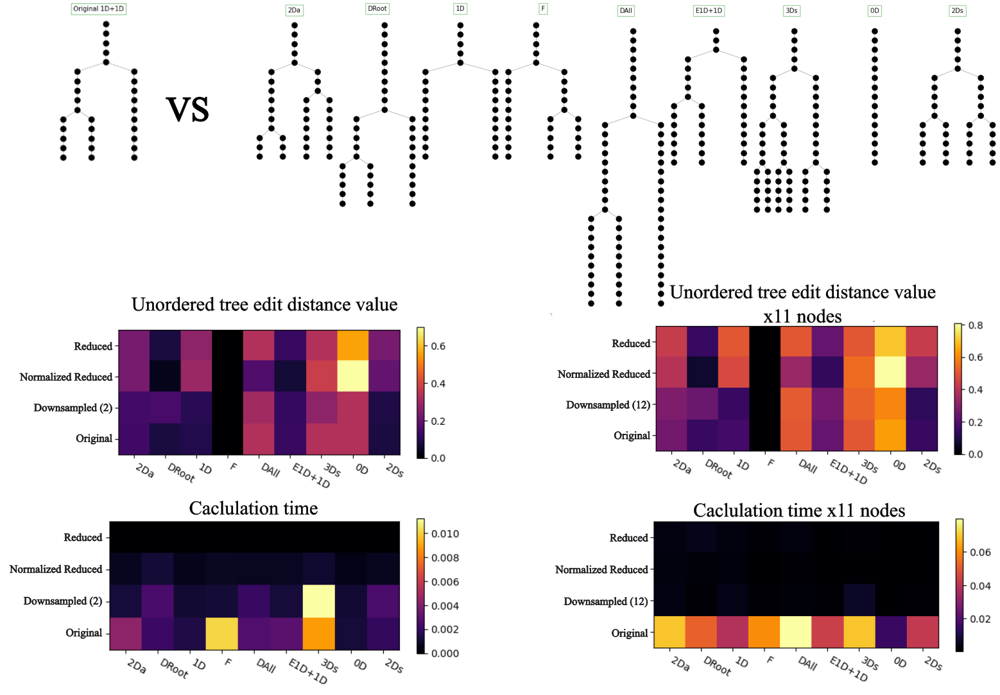

Introduction to Unordered Tree Edit Distance (UTED)
While visual inspection allows for identifying similarities and differences between lineages, it is insufficient for scientific analysis. Therefore, mathematical tools are required to objectively analyze and compare such structures. This module focuses on finding such patterns across lineages using an unordered tree edit distance (UTED) algorithm developed by [citation]. UTED computes the minimum distance between two trees by transforming one into the other using the fewest possible operations: addition of a node, removal of a node, and matching two nodes (also referred to as substitution).
UTED is label agnostic, meaning it can compare lineages without needing any prior knowledge of the naming of the cell, meaning that 2 daughter cells are born equal, however this strength comes with a significant drawback: the algorithm must map nodes from one tree to another which makes time consumed scale exponentially to the number of nodes, because there are many possible mappings. This pairing always respects the hierarchical structure of the trees; thus, nodes that exist at a specific depth will only be mapped to nodes of the same depth or greater.

Different Tree approximations
To address this computational challenge, we developed 4 approaches that reduce the number of nodes, while preserving accuracy. 2 of these also alter the behaviour of UTED, so it is crucial to understand the mechanisms and implications of each approach:
-
Full Tree: This algorithm is the simplest, as the dataset without changes is used to produce the distance. So the algorithm will either:
- Match a node, where the cost will be 0
- Add a node to either of the trees for a cost of 1
- Remove a node from either of the trees for a cost of 1.
Normal tree is the most accurate, but it does not scale well with time, meaning that computation time scales exponentially with the number of nodes.
-
Downsampled Tree: This algorithm reconstructs the tree but skips nodes every n time points, so the result will be similar to the first tree but with fewer nodes.
- Match a node, where the cost will be 0
- Add a node to either of the trees for a cost of 1
- Remove a node from either of the trees for a cost of 1.
Downsampled Tree is slightly less accurate or equal to normal tree, but much faster
-
Reduced Tree: This algorithm will reconstruct the trees, but every chain will be replaced with a node of the same length. This approximation completely changes the behaviour of the algorithm, as it will match whole chains with other chains and not just nodes. Such an algorithm may be extremely useful for fast but not precise results, however some biological question may be better answered using this algorithm.
- Match a node, the cost will be the absolute difference of the length of the 2 chains
- Add a node, will add a node of size equal to the length of the existing chain, so the cost will be the value of the length of the chain.
- Remove a node, will remove a node of size equal to the length of the existing chain, so the cost will be the value of the length of the chain.
This algorithm is extremely lightweight and fast; however, the score is different than the normal tree. Some users may prefer this algorithm due to its capability of comparing chains instead of nodes, making it easily interpretable. Many other developers use the same or similar algorithms to this one [novel metrics, deeplineage citation]
-
Bound Reduced Tree: This algorithm will use the same tree as the reduced tree, however the edit operations are modified so that big chains that have similar length will be easier to be matched together. Has the strengths of reduced tree, but the resulting distance is closer to the that of the normal tree.
- Match a node, the cost will be the absolute difference of the length of the 2 chains divided by the sum of both of them, so the result will be between 0 and 1
- Add a node, will add a node of size 1
- Remove a node, will remove a node of size 1
This algorithm has all the advantages of reduced tree, but tries to reduce its disadvantages but adding a new way of comparing chains.
To inspect any style:
from LineageTree import tree_styles
tree_styles.tree_style["simple"].value(parameters)
The need for normalization
Uted produces distances in the range of zero to infinity, meaning that the results are not easily interpretable. For instance, 2 visually similar, large trees may have a difference of 1000 nodes, but 2 small, dissimilar trees may only have a difference of 10 nodes. This makes the results of this algorithm confusing and its application very limited. To enhance the use of this algorithm, we developed a way to normalize these distances so that the results are bound between 0 and 1 using the number of nodes of the trees. Each tree style employs its own way of normalization.
-
Full: The distance of 2 trees is divided by the max or the sum of the number of nodes of the trees used.
-
Downsampled: The distance of 2 trees is divided by the max or the sum of the number of nodes of the downsapled tree.
-
Reduced: The distance of 2 trees is divided by the max or the sum of the number of nodes of the trees used before being converted to the reduced form ( Equal to the sum of all the node sizes after the conversion).
-
Normalized Reduced: The distance of 2 trees is divided by the max or the sum of the number of chains that exist in each tree.
Normalization in general - Max: This way of normalization produces values that are well distributed along the [0,1] axis, however, trees that show extreme disimilarity may produce values slightly bigger than one (1.16 max). However, most of the time, the compared trees are not that different, so it is a rare occasion.
- Sum: This way of normalization bounds the values between [0,1]; however, most trees will be distributed along the [0,0.5] axis, meaning it's more difficult to distinguish the similar trees from the dissimilar.
Template to create new styles:
from LineageTree import lineageTree
from LineageTree.tree_styles import abstract_trees
class tree_style_template(abstract_trees):
### The user has to implement these methods
def get_tree(self)-> tuple[dict[int, list], dict[int, int | float]]:
out_dict = {}
times_or_other_attribute = {}
... # If time_scale exists for cross embryo comparison use it here
return (out_dict, # The hierarchy of the nodes should be a dict(unique_node:[successors])
times_or_other_attribute) # An attribute that may be used for comparisons.
def _edist_format(self, adj_dict): # This methods seldom needs changing, creates the adjacency matrix
return super()._edist_format(adj_dict)# and provides the corresponding nodes that between lt and the tree style
def delta(self, x, y, corres1, corres2, times1, times2)-> int|float:
if x is None and y is None:
return 0
if x is None: # Cost for removing a node
return times2[corres2[y]]
if y is None: # Cost for adding a node
return times1[corres1[x]]
len_x = times1[corres1[x]]
len_y = times2[corres2[y]]
return abs(len_x - len_y) # Cost for matching a node
def get_norm(self)->int|float:
... # how will the normalization work, should return a function that
... # calculates the norm for every subtree of the starting tree
return value
@staticmethod
def handle_resolutions(
time_resolution1: float | int,
time_resolution2: float | int,
gcd, #the greatest common divisor of all the time resolutions of datasets in the manager.
downsample: int,
) -> tuple[int | float, int | float]: #Needed for cross embryo analysis
...
return (time_resolution_fix_for_dataset_1 # This list will be used as the time scale
,time_resolution_fix_for_dataset_2) # parameter when comparing.
Testing the approximations
This section is focused on showcasing the advantages and disadvantages of the tree approximations shown in the previous section.

Tree distance Graphs
The distance value is a very useful metric to check the similarity of two lineages, however its just a distance, it does not give you further information. A user should not only know how similar a tree is to another, but also which sublineages/subtrees are similar and which are not! Fortunately, we realized that we can extract important information during an important step of the algorithm, the matched pairs created during the mapping process and plot them into a new graph, called the tree distance graph. To produce these graphs, we color each chain that has been mapped with the value of the subtree spawned by these chains, showing a metric that can be interpreted as the quality of mapping. Such graphs can show two very significant things:
-
Variance: Such graphs will use a spectrum of colors to show the distances that are mapped and how well their mapping is, so colors that correspond to the good mapping indicate small variance during development.
-
Gain or loss of function, the unmapped regions can be interpreted as regions, where no region of one tree corresponds to the one with unmapped (of course this may also happen due to a bad dataset), which means that there is a lineage that does not exist in the other, a new lineage, the organism gained or lost a function!